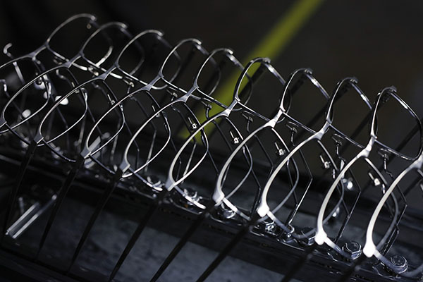
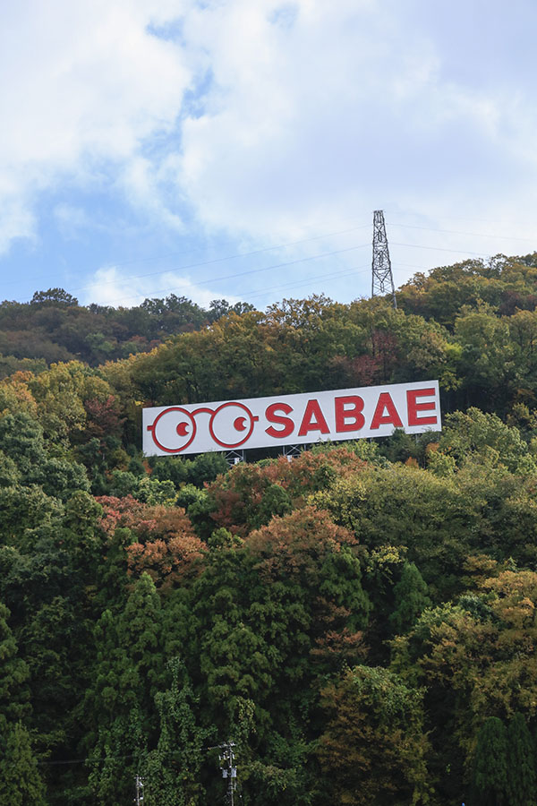
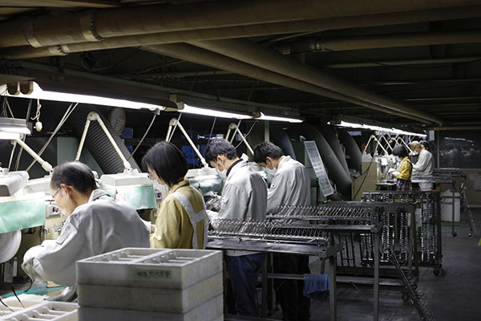
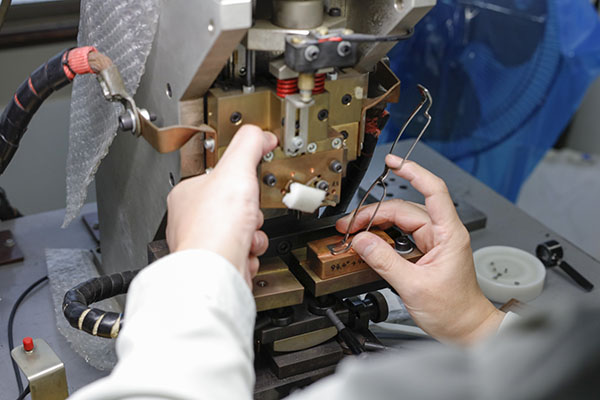
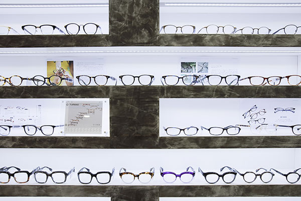

Префектура Фукуи · Сабаэ · ремесло
Сабаэ: почему очки из снежной префектуры Фукуи выбирает весь мир

От строго функциональных моделей до модных оправ: почти все японские очки делают в двух соседних городах префектуры Фукуи, Фукуи и Сабаэ. Разбираемся, как этот край стал главной очковой мастерской страны.
Цифры
Больше 90 процентов японских оправ
На префектуру Фукуи приходится больше 90 процентов оправ, сделанных в Японии. Центр производства находится в городах Фукуи и Сабаэ, и равных им по очкам в стране нет.

Край здесь холодный, и зимой его надолго заваливает снегом. Очковое дело началось с Годзаэмона Масунаги (родился в 1872 году). Он хотел облегчить суровую жизнь деревни и решил, что очки станут подработкой для крестьян в месяцы, когда в поле делать нечего. Масунага пригласил мастеров из Осаки и распространил ремесло по округе. Мастера объединялись в группы, которые здесь называли «тёба», и соперничали друг с другом, оттачивая технику. Постепенно каждый этап работы взяли на себя отдельные цеха и мастера, и вырос огромный центр производства, где всё держится на разделении труда.

Тон в очковом деле тогда задавали Европа и Америка, но в Фукуи упорно искали своё. Здесь придумали носоупоры, рассчитанные на строение лица японцев, и покрытие из сплава, которое не боится ржавчины. А в 1981 году местным мастерам первыми в мире удалось сделать очки из титана: лёгкие и почти не вызывающие аллергии на металл. Титан считался очень трудным в обработке материалом, и после этого успеха Фукуи и Сабаэ стали очковым центром мирового уровня.
Характер
Упорство, рождённое снегом
Председатель Ассоциации производителей очков префектуры Фукуи объясняет успех характером местных жителей.

«Здесь без конца что-то исследуют, улучшают и в итоге делают вещь лучше, чем у других. В этом и сила японского производства. Люди, которые растили урожай в суровой природе, серьёзны и терпеливы, и такой характер как раз подходит для очков, где нужна большая точность»
председатель Ассоциации производителей очков префектуры Фукуи
Будущее
Общая марка и молодые бренды
В 2003 году у края появилась общая марка THE291: она подтверждает, что очки высокого качества сделаны в Фукуи. Примерно с 2000 года заявили о себе молодые бренды, и некоторые из них получили «Сильмо д’Ор», премию, которую называют «Оскаром» очкового мира.

Смелые идеи дизайнеров воплощает местная техника обработки, которую считают одной из лучших в мире. Собрав вместе силы всего края, Фукуи открывает для очков новую эпоху.
Фото: Юити Ногути.